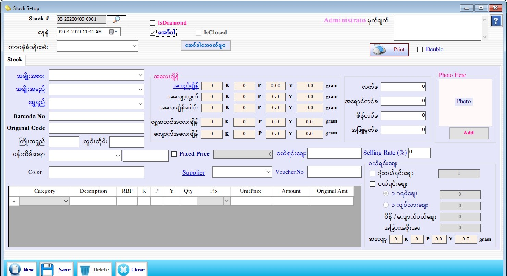

Item to Sales For Order Setup
ItemToSale Setup(ItemtoSales)
ItemToSale Setup(Volume)
ItemToSale Setup(Order)

- Item to Sale တွင် Order အတွက် Barcode သတ်မှတ်လိုလျှင် Item to Sale Form ရှိ Order check box တွင် အမှန်ခြစ်ခြစ်ပေးပါက Order Form ပေါ်လာမည်။
- Customer အော်ဒါလာအပ်သွားသောအထည်များကို ဘားကုတ်သတ်မှတ်ခြင်းဖြစ်ပါသည်။
- Stock # တွင် Stock ID ကို Serial အလိုက် Auto တပ်ပေးပါမည်။
- နေ့စွဲတွင် လက်ရှိရောက်နေသော Date ကိုပြပေးနေမည်ဖြစ်သည်။
- တာဝန်ခံဝန်ထမ်းကိုရွေးပေးရပါမည်။
- Order Voucher Button ကို နှိပ်၍ barcode သတ်မှတ်မည့် OrderInvoice Voucher ကိုရွေးချယ်ပြီး Barcode သတ်မှတ်နိုင်ပါသည်။
- အမျိုးအစားကို ရွေးချယ်ပါ။ ထိုသို့ရွေးချယ်လိုက်သည်နှင့် Barcode No တွင် Barcode ကို Auto တပ်ပေးပါမည်။ အမျိုးအမည်၊ ကြိုးရှည်ကွင်းတိုင်း စသည်တို့ကိုဖြည့်စွက်ပါ။ Fix Price နှင့် ရောင်းချမည်ဆိုပါက Fix Price check box ကို အမှန်ခြစ် ခြစ်ထားပေးပြီး သတ်မှတ်ဈေးနှုန်းကို ထည့်ပေးရပါမည်။
- ကျန်သောလုပ်ဆောင်ချက်များသည် အထည်တစ်ခုချင်းစီဘားကုတ်သတ်မှတ်သော Item to Sales Form နှင့်အတူတူပင်ဖြစ်ပါသည်။
- သို့သော် ပါဝင်သောကျောက်အမျိုးအစားထည့်ရာတွင် Customer ဆီမှလက်ခံထားသောကျောက်ဖြစ်ပါက Unit Price တွင် ‘0’ ရိုက်ထည့်ပေးရပါမည်။
- Data များ ဖြည့်စွက်ပြီးပါက Save Button နှိပ်၍ သိမ်းဆည်းနိုင်ပါသည်။
- Barcode ထုတ်ချင်လျှင် Print Button ကိုနှိပ်၍ ထုတ်နိုင်ပါသည်။
- သိမ်းဆည်းပြီးသား Data များအား ပြန်လည်ကြည့်ခြင်း၊ ပြင်ဆင်ခြင်းများပြုလုပ်ချင်ပါက Stock # ၏ ဘေးတွင် ရှိသော မှန်ဘီလူး button ကိုနှိပ်ပြီးပြန်လည်ကြည့်ရှုပြင်ဆင်ချင်သော Sale Item အား ရွေးချယ် ပြီးပြင်နိုင် ပါသည်။
- သိမ်းဆည်းပြီးသား ထည့်ပြီးသား Data များကို ဖျက်လိုလျှင် မှန်ဘီလူး button အားနှိပ်ပြီးရှာပါ။ ထို့နောက် မိမိဖျက်လိုသော Data ကို Delete Button ကိုနှိပ်၍ ဖျက်နိုင်ပါသည်။
- Sale Item အသစ်ထည့်လိုပါက New Button ကိုနှိပ်ပြီး အသစ်ထည့်နိုင်ပါသည်။
- Item to Sales Form အား အသုံးပြုပြီးပါက Close Button ကိုနှိပ်၍ ပိတ်နိုင်ပါသည်။